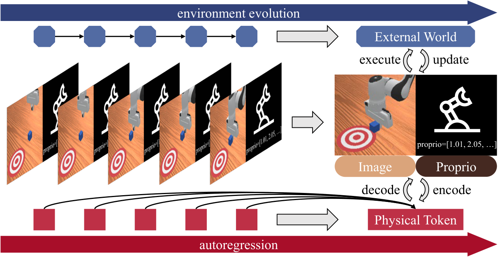
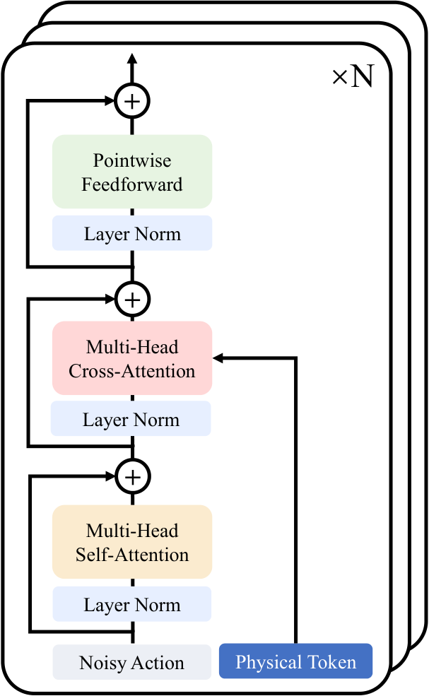
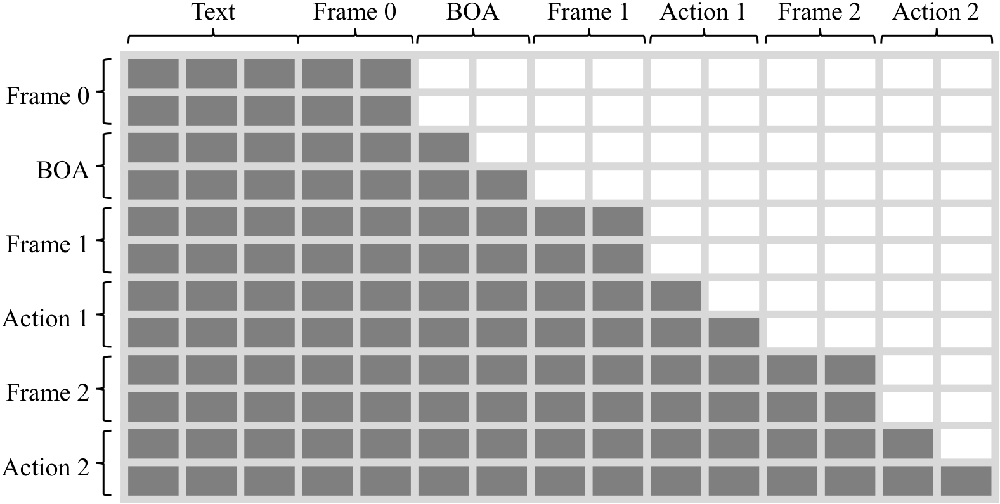
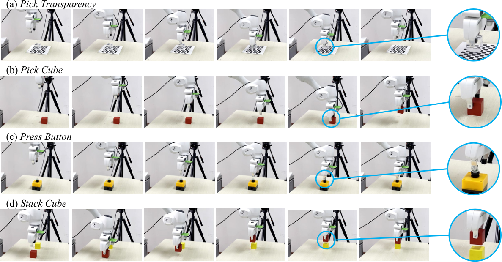
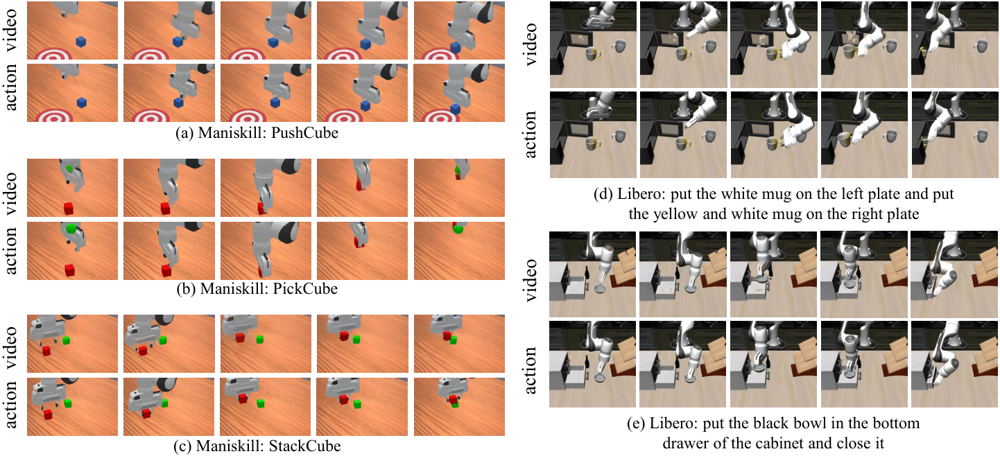
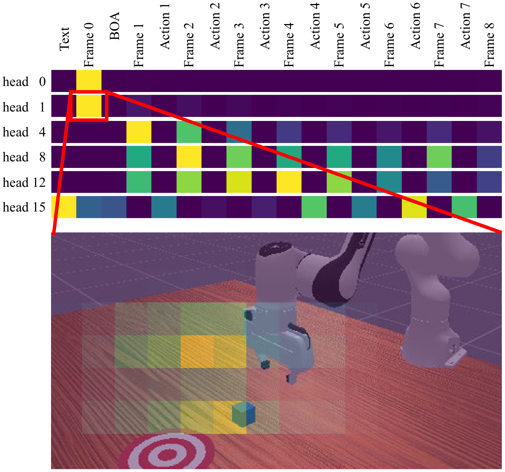

1. 论文速览
PhysGen 的核心想法是：不要只把预训练语言模型当机器人策略的“大脑”，也可以把预训练自回归视频生成模型当作一个隐式物理模拟器。模型把视觉帧和动作块投到同一个连续 physical token 空间，用 causal transformer 预测下一组“视觉+动作”token，再用扩散式 de-tokenizer 还原未来图像和可执行动作。
| 论文要解决什么 | 机器人操作缺少大规模动作示教数据；VLA 依赖 LLM/VLM 的符号知识，但操作需要连续空间、时间和物理交互。作者希望从视频生成模型中迁移“物体会怎样运动”的物理先验，用较少机器人数据学控制。 |
|---|---|
| 作者的方法抓手 | 基于 NOVA 自回归视频生成 backbone，提出 PhysGen：将视频帧 token 与 action chunk token 拼成 physical token；用连续扩散 de-tokenizer 建模视觉和动作分布；加入 inverse-kinematics causal mask、Lookahead Multi-Token Prediction、LoRA 训练和 KV-cache 推理。 |
| 最重要的结果 | LIBERO 平均成功率 90.8%，高于 OpenVLA 77%、WorldVLA 82%、Pi0-Fast 86%；ManiSkill 平均 74%，PushCube 达 100%；真实 Franka Panda 四任务平均 75%，与 Pi0 持平，并在透明物体抓取上 75% vs Pi0 70%。 |
| 阅读时要注意的点 | “视频生成模型当物理模拟器”是强主张，但实现上不是直接拿视频生成结果规划，而是把视频生成 backbone 改成 joint video-action autoregression。核心证据来自连续 token、视频预训练、AR rollout、L-MTP 的消融。 |

2. 动机与问题
2.1 为什么不是继续堆动作数据
论文从机器人数据稀缺出发：大规模 generative pretraining 在 NLP 和视觉里能带来跨任务泛化，但机器人动作示教昂贵、耗时、硬件强相关。VLA 方法把 LLM/VLM 接到 action head 上，能迁移语言和视觉知识，但 text/action 之间存在模态鸿沟：语言是符号描述，机器人动作是连续、几何、时间敏感的控制信号。
作者认为视频生成模型更接近机器人需要的知识：视频模型必须从历史帧预测未来帧，因此隐式学习 object permanence、接触后的运动趋势、时间一致性等物理先验。自回归视频生成尤其像控制中的 sequential decision process，因为它一步步滚动预测未来。
2.2 传统 tokenization 的问题
许多 autoregressive 模型依赖离散 token。离散化对语言自然，但图像 latent 和动作本质是连续信号，量化会带来 resolution error。对机器人来说，小的动作量化误差可能在长时序中累积成轨迹漂移。PhysGen 因此主张连续 token：视觉和动作都在连续 embedding 空间建模，再用 diffusion loss 学条件分布。
4. 预备知识
4.1 Diffusion loss 如何作为连续 token 的概率模型
普通扩散模型把干净样本 $x_0$ 逐步加噪：
$$q(x_t \mid x_{t-1})=\mathcal{N}(x_t;\sqrt{1-\beta_t}x_{t-1},\beta_t I).$$
训练目标是让网络预测注入的噪声：
$$L(\theta)=\mathbb{E}_{t,x_0,\epsilon}\left[\left\|\epsilon-\epsilon_\theta(\sqrt{\bar{\alpha}_t}x_0+\sqrt{1-\bar{\alpha}_t}\epsilon,t)\right\|^2\right].$$
MAR/NOVA 的关键启发是：给定 autoregressive context $z$，可以不用把连续信号量化成离散词表，而是直接训练 denoiser $\epsilon_\theta(x_t|t,z)$ 学 $p(x|z)$：
$$\mathcal{L}(z,x)=\mathbb{E}_{\epsilon,t}\left[\|\epsilon-\epsilon_\theta(x_t|t,z)\|^2\right].$$
PhysGen 把这个思想用于 frame token 和 action token 的 de-tokenization。
4.2 NOVA 提供了什么
NOVA 是连续、非量化的自回归视频生成模型。它按时间建模：
$$p(l,S_1,\dots,S_N)=\prod_{n=1}^{N}p(S_n|l,S_1,\dots,S_{n-1}),$$
并在帧内以 token set 的形式自回归生成。PhysGen 保留 NOVA 的语言与视觉 embedding 机制，让它继承视频预训练里的世界动态知识，然后新增动作 token 和动作扩散 de-tokenizer。
5. 方法详解
5.1 输入输出：从历史视觉和动作预测下一步
在第 $n$ 步，PhysGen 输入任务指令 $l$、历史图像 $\{O_0,\dots,O_{N-1}\}$ 与对应动作块 $\{A_1,\dots,A_{N-1}\}$，输出下一帧视觉状态 $O_N$ 和下一段动作块 $A_N$。每个动作块 $A_n$ 包含 $L$ 个连续动作，实验中 $L=8$。
这种 formulation 的意义是：模型不是只预测动作，而是预测“动作和环境一起怎样演化”。这让它更像 predictive world interaction model，而不是纯 policy head。
5.2 Tokenizer：把语言、视觉、动作放进同一空间
| 模态 | 编码方式 | 是否冻结 | 输出 |
|---|---|---|---|
| 语言指令 | Phi language model tokenizer/encoder | 冻结 | $E_l\in\mathbb{R}^{K_l\times d}$ |
| 视觉帧 | NOVA 原有 3D-VAE，flatten 成 frame tokens | 冻结 | $E_{O,n}\in\mathbb{R}^{K_O\times d}$ |
| 动作块 | MLP action tokenizer | 训练 | $E_{A,n}\in\mathbb{R}^{K_A\times d}$，其中 $K_A=L$ |
每个 physical token 由视觉 token 和动作 token 沿序列维拼接：
$$P_n=[E_{O,n};E_{A,n}],\quad P_n\in\mathbb{R}^{(K_O+K_A)\times d}.$$
由于观察先于动作，作者在动作序列前加入一个 learnable Begin-of-Action token 来对齐长度。
5.3 Physical Autoregression
PhysGen 沿用 LLM 的 token-by-token autoregression，但 token 现在代表视觉和动作的联合物理状态：
$$p(E_l,P_0,\dots,P_N)=\prod_{n=0}^{N}p(P_n|E_l,P_0,\dots,P_{n-1}).$$
条件分布由复制 NOVA 架构的 Causal Transformer 参数化。Transformer 输出条件向量 $Z_n$：
$$Z_n=\mathrm{Transformer}(l,P_0,\dots,P_{n-1}).$$
5.4 De-tokenizer：连续扩散还原视觉和动作
给定 $Z_n$，PhysGen 用 DiT-based denoising process 估计 $p(P_n|Z_n)$：
$$\mathcal{L}(P_n,Z_n)=\mathbb{E}_{\epsilon,t}\left[\|\epsilon-\epsilon_\theta(P_{n,t}|t,Z_n)\|^2\right].$$
反向采样形式为：
$$P_{n,t-1}=\frac{1}{\sqrt{\alpha_t}}\left(P_{n,t}-\frac{1-\alpha_t}{\sqrt{1-\bar{\alpha}_t}}\epsilon_\theta(P_{n,t}|t,Z_n)\right)+\sigma_t\delta.$$
视觉和动作的 de-tokenization 分开做：frame token 使用 NOVA 的重建范式；action token 使用轻量 Action-DiT，条件向量通过 cross-attention 注入。

5.5 Causal Mask 与隐式逆运动学
PhysGen 的 attention mask 是为“帧+动作”的联合 token 设计的。
- frame part 使用 chunk-wise full attention：同一帧内 patch 可以互相注意。
- action part 使用 temporal causal attention：动作块内早期动作不能看后续动作。
- action tokens 可以单向 attend 到 frame tokens：动作规划可以条件化于视觉状态，作者称其促进 implicit inverse kinematics。
- 跨 chunk 保持 temporal causality，避免未来信息泄漏。

5.6 Lookahead Multi-Token Prediction
L-MTP 把 lookahead action generation 和 Multi-Token Prediction 结合起来。每个自回归 step 中，action de-tokenizer 并行生成多个未来 token，论文实现中为 3 个 token。训练时监督所有预测 token；推理时只执行第一个 token，剩余 token 作为 lookahead 信息条件化后续预测。
这相当于让模型在执行当前动作时保留短期未来计划，缓解单 token rollout 的短视问题，并改善长时序一致性。
5.7 训练目标与实现细节
总损失是序列上 frame 与 action 的平均扩散损失：
$$loss=\sum_{n=1}^{N}\mathcal{L}(Z_n,P_n)=\sum_{n=1}^{N}\left(\mathcal{L}_{obs}(Z_n,E_{O,n})+\mathcal{L}_{act}(Z_n,E_{A,n})\right).$$
| 项目 | 设置 |
|---|---|
| 动作块长度 | $L=8$ |
| Transformer 最大上下文 | 2096 tokens |
| 上下文构成 | 256 language tokens + 5 个 physical token packages |
| 每个 physical package | 360 visual tokens + 8 action tokens |
| 多视角输入 | 拼接为一张图，送入 VAE 和 AR transformer |
| 训练效率 | teacher forcing 全并行；Transformer backbone 使用 LoRA 微调 |
| 推理效率 | KV-cache 缓存每层中间特征 |
| 硬件与时间 | 单张 NVIDIA A100-SXM4-80GB；最长训练 60 GPU hours |
| 位置编码 | RoPE；frame 与 action token 使用不同频率设置 |
6. 实验与复现
6.1 LIBERO 仿真实验
LIBERO 实验评估四个 suite：Spatial、Object、Goal、Long。每个 suite 约 400 demonstrations 微调，500 rollouts 评估，指标为 success rate。作者强调“no action pretraining”表示 backbone 没有在大规模 manipulation/action 数据上预训练。
| Method | Params | Spatial | Object | Goal | Long | Avg. |
|---|---|---|---|---|---|---|
| DP, w/o action pretraining | - | 78 | 93 | 68 | 51 | 72 |
| OpenVLA | 7B | 85 | 88 | 79 | 54 | 77 |
| ThinkAct | 7B | 88 | 91 | 87 | 71 | 84 |
| Pi0-Fast | 3B | 96 | 97 | 89 | 60 | 86 |
| MolmoACT | 7B | 87 | 95 | 88 | 77 | 87 |
| UniMimic, w/o action pretraining | ~200M | 71 | 79 | 67 | 29 | 62 |
| WorldVLA, w/o action pretraining | 7B | 88 | 96 | 83 | 60 | 82 |
| PhysGen, w/o action pretraining | 732M | 91.0 | 99.6 | 93.8 | 78.8 | 90.8 |
结果解释重点：PhysGen 平均 90.8，不只超过 LLM/VLM-based baseline，也超过视觉生成预训练 baseline WorldVLA 8.8 个点；在 Long suite 上比 WorldVLA 高 18.8 个点，这支撑作者关于连续 AR 世界交互建模改善长时序一致性的 claim。唯一较弱项是 Spatial，低于 Pi0-Fast 的 96，作者将其归因于底层视频模型空间感知有限。
6.2 ManiSkill 仿真实验
ManiSkill 选择 PushCube、PickCube、StackCube 三个任务。每任务使用 1000 demonstrations 微调，125 rollouts 评估。
| Method | PushCube | PickCube | StackCube | Avg. |
|---|---|---|---|---|
| ACT | 76 | 20 | 30 | 42 |
| BC-T | 98 | 4 | 14 | 39 |
| DP | 88 | 40 | 80 | 69 |
| ICRT | 77 | 78 | 30 | 62 |
| RDT | 100 | 77 | 74 | 84 |
| Pi0 | 100 | 60 | 48 | 69 |
| PhysGen | 100 | 73 | 48 | 74 |
ManiSkill 上 PhysGen 不如 RDT 平均高，但优于 ICRT 和 Pi0，尤其 PushCube 达 100%。这表明视频先验有帮助，但不等于在所有 manipulation setting 中全面超过 action-pretrained policy。
6.3 真实机器人实验
真实实验使用 Franka Panda，配两个 RealSense D415 摄像头，一个固定、一个腕部。四个任务是 Pick Cube、Press Button、Stack Cube、Pick Transparency。每任务收集 80-100 条 teleoperation demonstrations，评估 20 trials。ACT 从零训练，OpenVLA 和 Pi0 用官方 checkpoint 微调；PhysGen 只用这些收集数据微调，backbone 没有大规模动作预训练。

| Method | Pick Cube | Press Button | Stack Cube | Pick Transparency | Avg. |
|---|---|---|---|---|---|
| ACT | 40 | 40 | 30 | 10 | 30 |
| OpenVLA | 30 | 25 | 10 | 0 | 16.3 |
| Pi0 | 85 | 85 | 60 | 70 | 75 |
| PhysGen | 80 | 85 | 60 | 75 | 75 |
6.4 消融实验
消融在 LIBERO-Object 上进行，指标为 success rate。
| Variant | Pretrain | Token | L-MTP | Backbone | SR | 解释 |
|---|---|---|---|---|---|---|
| PhysGen-Zero | No | continuous | + | AR | 86.4 | 无视频预训练，作为检验 NOVA prior 的对照 |
| PhysGen-Discrete | NOVA | discrete | + | AR | 94.2 | 动作量化成离散词表，测试连续 token 价值 |
| PhysGen-NoAR | NOVA | continuous | - | NoAR | 95.0 | 去掉自回归 rollout，等价于 $N=1$ 单步映射 |
| PhysGen-STP | NOVA | continuous | - | AR | 96.8 | 单 token prediction，去掉 Lookahead-MTP |
| PhysGen-Full | NOVA | continuous | + | AR | 99.6 | 完整模型 |
消融对应四个结论：视频预训练带来 +13.2；连续 token 相对 discrete 带来 +5.4；AR 架构带来 +4.6；L-MTP 带来 +3.4。
6.5 质性分析


7. 讨论与局限
7.1 这篇论文最有价值的地方
最有价值的是它把“视频生成模型中有物理知识”这句话落成了一个可训练的机器人策略结构。它没有停在“生成视频再从视频中提动作”的间接路线，而是把动作直接并入自回归视频 token 流，让模型同时预测未来视觉和动作。这使得视频 prior、动作控制和序列规划在同一个模型内部交互。
第二个价值是连续 token。机器人动作和视觉 latent 的连续性非常重要，离散 token 在语言里自然，在控制里却容易产生精度损失。PhysGen 用扩散 de-tokenizer 学连续条件分布，在保持生成建模能力的同时避免硬量化。
7.2 结果为什么站得住
- 消融闭环比较完整：视频预训练、连续 token、自回归、L-MTP 分别有对应 ablation，且每项都有正收益。
- 与强基线比较：LIBERO 上对比 OpenVLA、Pi0-Fast、WorldVLA、MolmoACT；真实实验对比 Pi0，说明不是只打弱 baseline。
- 真实透明物体任务有辨识度：Pick Transparency 涉及反射/折射导致的视觉歧义，正好能测试视频物理先验是否帮助控制。
7.3 需要谨慎的地方
“视频模型=物理模拟器”仍是隐喻：视频生成模型学到的是视觉统计中的物理规律，不一定等价于可控、可验证的 dynamics model。它可能预测视觉合理但控制上错误的状态。
真实实验规模较小：四个 Franka tabletop 任务、每任务 20 trials，可以证明可行性，但不足以说明广泛 real-world generalization。
ManiSkill 并非全面领先：平均 74 低于 RDT 的 84，StackCube 也低于 DP/RDT。这说明没有动作预训练的视频先验不是所有场景的银弹。
源码未包含实际附录：正文提到真实任务细节见 Appendix，但 LaTeX 中 appendix input 被注释掉。因此部分任务定义细节无法从源码进一步核查。
8. 组会追问
Q1: PhysGen 和 WorldVLA/UWM 最大区别是什么？
它们都关注 video-action joint prediction，但 PhysGen 明确采用 NOVA 式连续非量化自回归 backbone，把 frame token 和 action token 拼成 physical token，逐步预测世界和机器人共同演化；同时用 diffusion de-tokenizer 对连续视觉/动作分布建模。
Q2: 为什么 action token 可以 attend 到 future visual states 不算泄漏？
作者的意思是在同一个 physical chunk 内，动作规划可以读取对应视觉 token 表征，从而形成视觉条件化的逆运动学关系；跨 chunk 仍保持 temporal causal mask。这里要注意“future visual states”更像 chunk 内联合 token 的结构化条件，而不是无限制读取真实未来轨迹。
Q3: L-MTP 推理时为什么只执行第一个 token？
后续 token 用作 lookahead 信息，帮助当前预测具备更长规划视野；只执行第一个 token 可以保留 receding-horizon control 的反馈能力，下一步根据真实环境反馈重新预测。
Q4: 连续 diffusion de-tokenizer 比 MLP regression 好在哪里？
MLP regression 给出确定性点估计，容易平均化多模态动作。diffusion de-tokenizer 学的是条件分布 $p(P_n|Z_n)$，既保留连续精度，又保留生成模型表达多模态输出的能力。
Q5: 如果复现，最容易踩坑的是哪里？
一是 token 组织和 mask：language、5 个 physical package、每包 360 visual + 8 action token 必须对齐；二是 action de-tokenizer 的扩散采样和训练时对 $t$ 的多次采样；三是多视角拼接后与原始 NOVA VAE 的输入分布是否匹配。
9. 复现信息
9.1 链接与代码状态
- arXiv: https://arxiv.org/abs/2603.00110
- Hugging Face paper page: https://huggingface.co/papers/2603.00110
- 源码 LaTeX 中未提供 PhysGen 官方代码仓库链接；Web 检索也未发现明确对应 `2603.00110` 的官方 GitHub。
9.2 最小复现配置速记
Backbone: NOVA autoregressive video generation model
Language tokens: frozen Phi language model
Visual tokenizer: frozen 3D-VAE from NOVA
Action tokenizer: MLP, K_A = L = 8
Physical token: concat(frame tokens, action tokens)
Context length: 2096 = 256 language + 5 * (360 visual + 8 action)
De-tokenizer: frame diffusion + Action-DiT action diffusion
Training: teacher forcing, LoRA finetuning, 4 samples of t per image/action
Inference: autoregressive rollout with KV-cache
Hardware: single A100-SXM4-80GB, longest finetuning within 60 GPU hours9.3 覆盖检查
本报告已覆盖 Abstract、Introduction、Related Work、Preliminaries、Method、Experiment、Conclusion 的核心内容。源码包含 `\appendix` 但附录文件输入被注释，未发现实际附录正文可整合；报告已在相应位置说明这一点。
生成日期：2026-05-08。源码包、PDF 与解压目录保留未清理，便于后续核查。